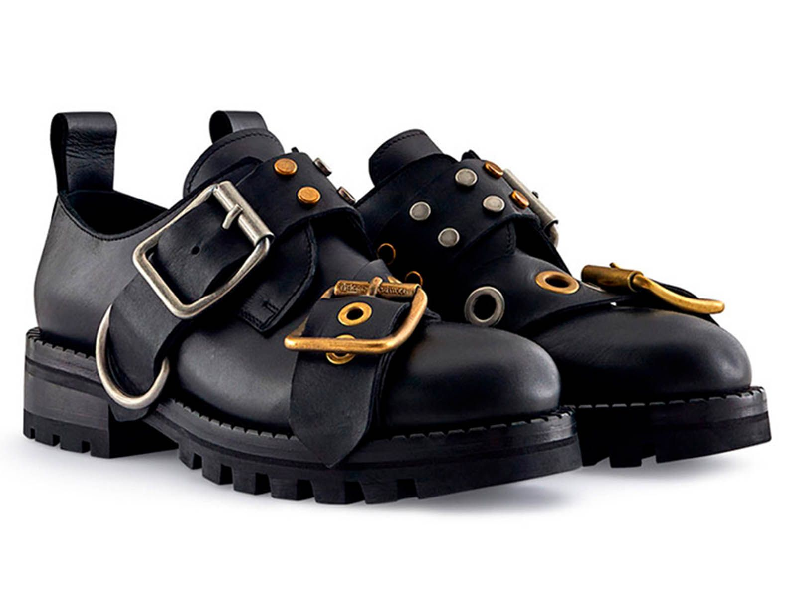

Calzado
Vivienne Westwood comenzó a diseñar calzado a principios de la década de 1970, lo que significa que la firma británica lleva más de 50 años creando zapatos que desafían las normas tradicionales de la moda y la usabilidad. Desde sus inicios en el movimiento punk junto a Malcolm McLaren en su icónica tienda de Kings Road, el calzado en el universo de Westwood nunca se pensó como un simple accesorio secundario, sino como una declaración política, arquitectónica y estética con un profundo arraigo histórico. A lo largo de estas cinco décadas, la marca se ha especializado en fusionar el fetichismo, la indumentaria histórica de los siglos XVIII y XIX, la rebeldía callejera y la innovación tecnológica, dando vida a siluetas que hoy en día se consideran verdaderas obras de arte y piezas de museo.Dentro de sus especializaciones más célebres destacan las plataformas extremas de inspiración barroca y victoriana, introducidas con fuerza a finales de los años 80 y principios de los 90. Estas piezas maximalistas desafían la gravedad con tacones monumentales y cintas kilométricas para atar al tobillo; un claro ejemplo de su impacto cultural ocurrió en 1993, cuando la supermodelo Naomi Campbell sufrió su famosa caída en la pasarela al modelar los imponentes zapatos Super Elevated Ghillie de 25 centímetros de alto. De la misma manera, la firma es mundialmente reconocida por sus zapatos Rocking Horse, lanzados en la colección World's End de 1985; este calzado se caracteriza por una innovadora suela de madera maciza tallada en forma de balancín con un corte circular en el centro, diseñada para balancear el pie de forma exagerada al caminar. Por otro lado, la vertiente más transgresora de sus inicios sobrevive en las botas de estilo punk y las icónicas Pirate Boots de 1981, caracterizadas por sus cueros holgados que se doblan sobre la pierna y se ajustan mediante múltiples correas con hebillas, así como los zapatos Animal Toe, cuyas puntas esculpidas imitan las pezuñas o garras de un animal. Finalmente, en las últimas décadas la marca expandió su especialización hacia la sostenibilidad y el diseño democrático a través de su exitosa colaboración con la marca brasileña Melissa, iniciada en 2008. Esta línea revolucionó la industria al crear calzado de lujo accesible hecho de Melflex, un plástico flexible, 100% reciclable y con un característico aroma a chicle, donde destaca el famosísimo modelo de tacón destalonado Lady Dragon adornado con corazones o el icónico logo de la órbita de Westwood, consolidando así un legado donde el calzado es el protagonista absoluto del estilo y la actitud.
